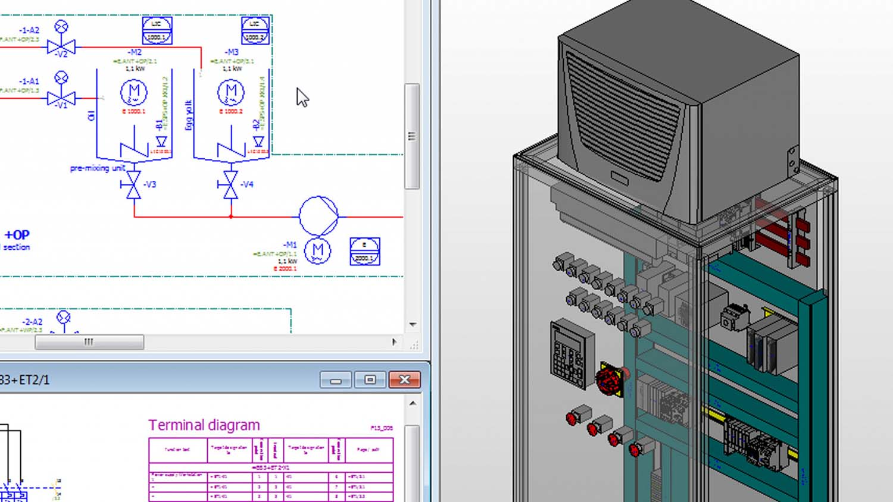

Tárgy leírás
A hálózatok tervezése és szimulációja mint a nevében is látható a hálózatok tervezésével és ennek további alap számításaival valamint ezen megtervezett hálózatok szimulációjával foglalkozik. A félév során nem csak a tervezéssel hanem a hálózatok engedélyeztetésével is foglalkozhatunk. A szimulációk alatt egy Eplan nevezetű szoftverfejlesztő programmal is foglallkozhatunk. Megtanulhatjuk benne a számítógépen keeresztüli villamoshálózat tervezését valamint a kész hálózat egyes részenek 2D és/vagy 3D-s megvalósítását.A tantárgy teljesítéséhez a követelmény egy elméletben működő villamos tervezés. 3 db motort kell villamos árammal ellátni és ezeknek a motorokhoz a vezeték méretezést és a hozzájuk megfelelő védelmek kialakítása. Későbbiekben pedig egy zárthelyi a 13. héten, amely 50% alaphatárral rendelkezik ez alatt pót zh szükséges. A kész program és a 4-5 érdemjegyre megírt zh után 4-5 megajánlott jegy adható a szorgalmi időszak végén.
